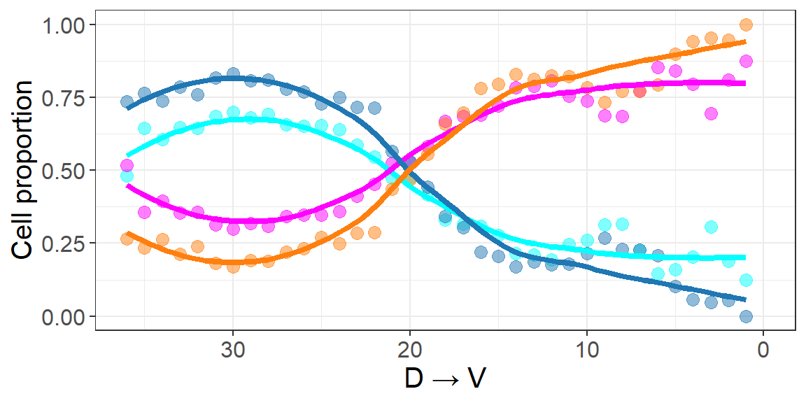

Code
library(Seurat)
library(scCustomize)
library(tidyverse)
library(tidydr)
library(cowplot)
library(umap)
library(pheatmap)
library(ggblur)
library(ggrepel)
library(viridis)
library(Biorplot)
source('bin/Palettes.R')
source('bin/includes.R')library(Seurat)
library(scCustomize)
library(tidyverse)
library(tidydr)
library(cowplot)
library(umap)
library(pheatmap)
library(ggblur)
library(ggrepel)
library(viridis)
library(Biorplot)
source('bin/Palettes.R')
source('bin/includes.R')Adult.Ex <- readRDS('../data/rds/Adult.Ex.rds')
sp.PFC <- readRDS('../data/rds/sp.PFC.rds')Adult.Ex.barcode <- subset(
Adult.Ex,
cells=colnames(Adult.Ex)[which(Adult.Ex$BC_num>0)]
)
Adult.IT.PT.barcode <- subset(Adult.Ex, cells=colnames(Adult.Ex)[which(
(Adult.Ex$BC_num>0 & Adult.Ex$Ex_subtype == "IT") |
(Adult.Ex$BC_num>0 & Adult.Ex$Ex_subtype == "PT" & Adult.Ex$sample == "Adult1")
)])barcode <- c("SSp-I","AUD-I","RSP-I","VIS-I","CP-I",
"ECT-I","AId-I","BLA-I","ACB-I","LHA-I")
seu <- subset(sp.PFC, cells=colnames(sp.PFC)[which(
sp.PFC$ABA_hemisphere=="Left" & sp.PFC$BC_num>0)])
bc_slice <- seu@meta.data[,c(barcode, 'Y')]
bc_slice <-
bc_slice |>
mutate(bin = cut(Y, breaks = 36))
bin <- sort(unique(bc_slice$bin))
bc_slice$bin_index <- match(bc_slice$bin, bin)
bc_slice_mean <-
bc_slice[,c(barcode,"bin_index")] |>
group_by(bin_index) |>
dplyr::summarize(across(1:length(barcode), ~sum(.x>0, na.rm = TRUE))) |>
as.data.frame()
for (i in 1:36){
bc_slice_mean[i,2:11] <- bc_slice_mean[i,2:11]/length(which(bc_slice$bin_index==i))
}
bc_slice_mean <- bc_slice_mean[,2:11]
bc_slice_mean <- t(scale(bc_slice_mean))
annotation_row = data.frame(
Proj_module = rep(c("ITi-D","ITi-V"),c(5,5))
)
rownames(annotation_row) <- rownames(bc_slice_mean)
ann_colors = list(
Proj_module = c('ITi-D'='#1f77b4','ITi-V'='#ff7f0e')
)
Figure2_A <-
pheatmap(bc_slice_mean[barcode, rev(1:36)],
color = colorRampPalette(c("white","#1f77b4"))(200),
breaks = seq(-1,1,0.01), show_colnames = F, treeheight_row=10,
cluster_rows = F, cluster_cols = F, annotation_row=annotation_row,
annotation_colors = ann_colors, annotation_names_row=F,
annotation_legend=F
)
Figure2_Aggsave("../pdf/Figure2/Figure2_A.pdf", plot = Figure2_A,
height = 3, width = 7, units = "in")barcode <- c("SSp-I","AUD-I","RSP-I","VIS-I","CP-I",
"ECT-I","AId-I","BLA-I","ACB-I","LHA-I")
seu <- subset(sp.PFC, cells=colnames(sp.PFC)[which(
sp.PFC$ABA_hemisphere=="Left" & sp.PFC$BC_num>0)])
bc_slice <- seu@meta.data[,c(barcode, 'slice')]
bc_slice_mean <-
bc_slice |>
group_by(slice) |>
dplyr::summarize(across(1:length(barcode), ~sum(.x>0, na.rm = TRUE))) |>
as.data.frame()
for (i in 1:36) {
bc_slice_mean[i,2:11] <- bc_slice_mean[i,2:11]/length(which(bc_slice$slice==bc_slice_mean$slice[i]))
}
rownames(bc_slice_mean) <- bc_slice_mean$slice
bc_slice_mean <- bc_slice_mean[,2:11]
bc_slice_mean <- t(scale(bc_slice_mean))
annotation_row = data.frame(
Proj_module = rep(c("ITi-D","ITi-V"),c(5,5))
)
rownames(annotation_row) <- rownames(bc_slice_mean)
ann_colors = list(
Proj_module = c('ITi-D'='#1f77b4','ITi-V'='#ff7f0e')
)
Figure2_B <-
pheatmap(bc_slice_mean[barcode,],
color = colorRampPalette(c("white","#d62728"))(200),
breaks = seq(-1,1,0.01), show_colnames = F, treeheight_row=10,
cluster_rows = F, cluster_cols = F, annotation_row=annotation_row,
annotation_colors = ann_colors, annotation_names_row=F,
annotation_legend=F
)
Figure2_Bggsave("../pdf/Figure2/Figure2_B.pdf", plot = Figure2_B,
height = 3, width = 7, units = "in")slice <- 'IT_slice_05'
barcode <- 'RSP-I'
limits <- c(0,3)
seu <- subset(sp.PFC, cells=colnames(sp.PFC)[which(sp.PFC$ABA_hemisphere=="Left")])
df <- data.frame(
X = seu$X,
Y = seu$Y,
Zscore = scale(log1p(seu@meta.data[,barcode]))
)
df <- df[which(seu$slice==slice),]
df$Zscore[df$Zscore<limits[1]] <- limits[1]
df$Zscore[df$Zscore>limits[2]] <- limits[2]
df <- df[order(df$Zscore),]
Figure2_C <-
ggplot(df, aes(x=X,y=Y)) +
geom_point(aes(colour=Zscore), size=1) +
scale_color_gradientn(colours = viridis(n = 256, option = "E", direction = 1),
limits = limits) +
ggdark::dark_theme_void() +
labs(title = "") +
theme(plot.title = element_blank(), legend.position = "none") +
coord_fixed()
Figure2_Cggsave("../pdf/Figure2/Figure2_C/RSP_slice05.png", plot = Figure2_C,
height = 4, width = 4, units = "in")seu <- subset(sp.PFC, cells=colnames(sp.PFC)[which(sp.PFC$ABA_hemisphere=="Left")])
slice <- unique(seu$slice)
df <- data.frame('slice'=slice)
for (i in 1:length(slice)){
df$`BLA-I`[i] <- length(which(seu$slice==slice[i] &
seu$`BLA-I`>0))/
length(which(seu$slice==slice[i] & seu$BC_num>0))
df$`RSP-I`[i] <- length(which(seu$slice==slice[i] &
seu$`RSP-I`>0))/
length(which(seu$slice==slice[i] & seu$BC_num>0))
}
df$x <- c(1:36)
df <- pivot_longer(df, 2:3, names_to = "target", values_to = "value")
# RSP.I="#6BD76BFF" BLA="#D595A7FF"
Figure2_D_1 <-
ggplot(df, aes(x=x, y=value, color=target)) +
#geom_line(color="#D595A7FF",size=1) +
geom_point(alpha=0.5, size=3) +
geom_smooth(se = F, linewidth=1.5) +
theme_bw() +
scale_x_continuous(breaks = seq(0,35,5)) +
scale_color_manual(values = c('RSP-I'="#1f77b4", 'BLA-I'="#ff7f0e")) +
theme(text = element_text(size=15),
plot.title = element_text(size = 20, hjust = 0.5)) +
labs(x='A P',y='Cell proportion')
Figure2_D_1`geom_smooth()` using method = 'loess' and formula = 'y ~ x'ggsave("../pdf/Figure2/Figure2_D_1.pdf", plot = Figure2_D_1,
height = 2.5, width = 6, units = "in")barcode <- c("VIS-I","ACB-I","AId-I","CP-I","ECT-I",
"BLA-I","AUD-I","SSp-I","RSP-I","LHA-I")
seu <- subset(sp.PFC, cells=colnames(sp.PFC)[which(sp.PFC$ABA_hemisphere=="Left")])
bc_slice <- seu@meta.data[,c(barcode, 'Y','BC_num')]
bc_slice <-
bc_slice |>
mutate(bin = cut(Y, breaks = 36))
bin <- sort(unique(bc_slice$bin))
bc_slice$bin_index <- match(bc_slice$bin, bin)
df <- data.frame('bin_index'=c(1:36))
for (i in 1:36){
df$`BLA-I`[i] <- length(which(bc_slice$bin_index==i & bc_slice$`BLA-I`>0))/
length(which(bc_slice$bin_index==i & bc_slice$BC_num>0))
df$`RSP-I`[i] <- length(which(bc_slice$bin_index==i &
bc_slice$`RSP-I`>0))/
length(which(bc_slice$bin_index==i & bc_slice$BC_num>0))
}
df$x <- c(1:36)
df <- pivot_longer(df, 2:3, names_to = "target", values_to = "value")
# RSP.I="#6BD76BFF" BLA="#D595A7FF"
Figure2_D_2 <-
ggplot(df, aes(x=x, y=value, color=target)) +
#geom_line(color="#D595A7FF",size=1) +
geom_point(alpha=0.5, size=3) +
geom_smooth(se = F, linewidth=1.5) +
theme_bw() +
scale_x_continuous(breaks = seq(0,35,5)) +
scale_color_manual(values = c('RSP-I'="#1f77b4", 'BLA-I'="#ff7f0e")) +
theme(text = element_text(size=15),
plot.title = element_text(size = 20, hjust = 0.5)) +
labs(x='V D',y='Cell proportion')
Figure2_D_2`geom_smooth()` using method = 'loess' and formula = 'y ~ x'ggsave("../pdf/Figure2/Figure2_D_2.pdf", plot = Figure2_D_2,
height = 2.5, width = 6, units = "in")library(networkD3)
IT_SubType <- c("L2/3_IT_1", "L4/5_IT_1", "L5_IT_1", "L6_IT_1",
"L2/3_IT_2","L4/5_IT_2", "L5_IT_2", "L6_IT_2")
seu <- subset(Adult.IT.PT.barcode, cells=colnames(Adult.IT.PT.barcode)[which(Adult.IT.PT.barcode$SubType %in% IT_SubType)])
mat <- matrix(nrow = 2, ncol = length(IT_SubType))
rownames(mat) <- c("RSP-I", "BLA-I")
colnames(mat) <- IT_SubType
for (i in 1:2){
mat[i,] <- as.numeric(table(seu$SubType[which(seu@meta.data[,rownames(mat)[i]]>0)])[IT_SubType])
}
mat <- mat/rowSums(mat)
mat <- as.data.frame(mat)
mat$Target <- rownames(mat)
links <- pivot_longer(mat, !Target, names_to = "SubType", values_to = "value")
colnames(links) <- c('target', 'source', 'value')
links <- links[which(links$value != 0),]
nodes <- c(IT_SubType,"RSP-I","BLA-I")
nodes <- data.frame(name=nodes)
nodes$index <- 0:(nrow(nodes) - 1)
links <- merge(links, nodes, by.x="source", by.y="name")
links <- merge(links, nodes, by.x="target", by.y="name")
names(links) <- c("target","source","Value","IDsource","IDtarget")
nodes.colour <- c(
"L2/3_IT_1"='#ffd600',"L4/5_IT_1"='#ff6d00',"L5_IT_1"='#0091ea',"L6_IT_1"='#c51162',"L2/3_IT_2"='#ffff8d',"L4/5_IT_2"='#ffd180',"L5_IT_2"='#80d8ff',"L6_IT_2"='#ff80ab','RSP-I'="#1f77b4", 'BLA-I'="#ff7f0e")
pastecolor <- paste('d3.scaleOrdinal() .domain(["', nodes$name[1], sep = '')
for (i in 2:length(nodes$name)){
pastecolor <- paste(pastecolor, '", "', nodes$name[i], sep = '')
}
pastecolor <- paste(pastecolor, '"]) .range(["', sep = '')
pastecolor <- paste(pastecolor, nodes.colour[1], sep = '')
for (i in 2:length(nodes.colour)){
pastecolor <- paste(pastecolor,'", "', nodes.colour[i], sep = '')
}
pastecolor <- paste(pastecolor,'"])', sep = '')
colourScale <- pastecolor
links$Group <- links$target
links$Group <- as.factor(links$Group)
colnames(links) <- c("source", "target", "Value", "IDtarget", "IDsource", "Group")
Figure2_E <-
sankeyNetwork(Links=links, Nodes=nodes, Source="IDsource", Target="IDtarget",
Value="Value", NodeID="name", fontSize=20,
nodeWidth=30, nodePadding=10, margin=NULL,
height=600, width=400, sinksRight=TRUE,
colourScale=colourScale, LinkGroup="Group",iterations=0)
Figure2_EsaveNetwork(Figure_2L,"../pdf/Figure2/Figure2_E/Figure2_E.html")#seu <- Adult.IT.PT.barcode
#BLA_I <- colnames(seu)[which(seu$`BLA-I`>0 & seu$`RSP-I`==0)]
#RSP_I <- colnames(seu)[which(seu$`RSP-I`>0 & seu$`BLA-I`==0)]
#DEGs <- FindMarkers(seu, ident.1 = BLA_I, ident.2 = RSP_I, logfc.threshold = 0)
#saveRDS(DEGs, '../data/rds/DEGs_BLA_VS_RSP.rds')
DEGs <- readRDS('../data/rds/DEGs_BLA_VS_RSP.rds')DEGs$label <- ""
top5_gene <- rownames(DEGs)[which(DEGs$avg_log2FC>0.5 & DEGs$p_val_adj<1e-2)]
if(length(top5_gene)>5){
top5_gene <- top5_gene[1:10]
}
down5_gene <- rownames(DEGs)[which(DEGs$avg_log2FC < -0.5 &
DEGs$p_val_adj < 1e-2)]
if(length(down5_gene)>5){
down5_gene <- down5_gene[1:10]
}
#top5_gene <- c(top5_gene,"Cnr1")
#down5_gene <- c(down5_gene,"Bdnf")
DEGs$label[match(top5_gene, rownames(DEGs))] <- top5_gene
DEGs$label[match(down5_gene, rownames(DEGs))] <- down5_gene
DEGs$Type <- 'not significant'
DEGs$Type[which(DEGs$avg_log2FC>0.5 & DEGs$p_val_adj<1e-2)] <- "Up"
DEGs$Type[which(DEGs$avg_log2FC < -0.5 & DEGs$p_val_adj<1e-2)] <- "Down"
Figure2_F <-
ggplot(DEGs, aes(x=avg_log2FC, y= -log10(p_val_adj))) +
geom_point(aes(color=Type), size=0.5) +
geom_vline(aes(xintercept=0.5), colour="black", linetype="dashed",
linewidth = 0.5) +
geom_vline(aes(xintercept = -0.5), colour="black", linetype="dashed",
linewidth = 0.5) +
geom_text_repel(aes(label=label, color=Type), size=3, max.overlaps=100) +
theme_classic() +
theme(plot.title = element_text(size = 20, hjust = 0.5),
text = element_text(size = 15), legend.position = "none") +
scale_color_manual(values = c("Up"='#c82423', "Down"='#2878b5',
'not significant'='lightgray')) +
xlim(min(DEGs$avg_log2FC), max(DEGs$avg_log2FC)) +
ylim(0,100) +
labs(title = "", x = 'log2FC', y = '-log10(P value)')
Figure2_Fggsave("../pdf/Figure2/Figure2_F.pdf", plot = Figure2_F,
height = 3, width = 4, units = "in")knitr::include_graphics("images/Figure2_G.png", dpi = 300)Barcode <- c('VIS-I','SSp-I','CP-I','AUD-I','RSP-I',
'BLA-I','ACB-I','ENTl-I','AId-I','ECT-I',
'ACB-C','PL-C','ECT-C','ENTl-C',
'BLA-C','CP-C','AId-C','RSP-C',
'MD-I','RE-I','DR-I','VTA-I','LHA-I','SC-I')
cluster_order <- c(1,14,17,22,23,25,26,27,28,29,31,
7,8,9,10,15,16,18,19,20,21,
2,3,11,12,13,24,30,32,33,
4,5,6)
Ex_BC_mat <- Adult.Ex.barcode@meta.data[,Barcode]
Ex_BC_mat[is.na(Ex_BC_mat)] <- 0
Ex_BC_mat <- scale(Ex_BC_mat)
Ex_BC_mat <- Ex_BC_mat[Adult.Ex.barcode$BC_num > 1,]
set.seed(20240422)
umap_out <- umap(Ex_BC_mat)
umap_result <- as.data.frame(umap_out$layout)
colnames(umap_result) = c("UMAP_1","UMAP_2")
umap_result$Proj_subtype <-
factor(Adult.Ex.barcode@meta.data[rownames(Ex_BC_mat),'Proj_subtype'],
levels = cluster_order)
label <- umap_result |>
group_by(Proj_subtype) |>
dplyr::summarise(UMAP_1 = median(UMAP_1), UMAP_2 = median(UMAP_2))
Figure2_H <-
ggplot(umap_result, aes(UMAP_1, UMAP_2, color=Proj_subtype, fill=Proj_subtype)) +
geom_point(size=1, alpha=0.8) +
scale_color_manual(values = col_Proj_subtype) +
theme_dr(xlength = 0.2, ylength = 0.2,
arrow = grid::arrow(length = unit(0.1, "inches"),
ends = 'last', type = "closed")) +
theme(panel.grid = element_blank()) +
guides(color = guide_legend(override.aes = list(size = 5))) +
coord_fixed()
Figure2_Hggsave("../pdf/Figure2/Figure2_H.pdf", plot = Figure2_H,
height = 5, width = 6, units = "in")bg3d(color = "white")
#bg3d(color = "black")
par3d(userMatrix = rotationMatrix(-pi/6, -1, 1, 0), zoom = 0.6)
acr.list <- c("MOs","PL","ORBm","ACAd","ILA","DP","ACAv")
for(acr in acr.list){
mesh <- mesh3d.allen.annot.from.id(id.from.acronym(acr))
#to.del <- which(mesh$vb[1,] < 0)
to.del <- NA
mesh$it <- mesh$it[,!is.element(mesh$it[1,], to.del) & !is.element(mesh$it[2,], to.del) & !is.element(mesh$it[3,], to.del)]
#col <- color.from.acronym(acr)
col <- "lightgray"
#col <- col_Region[acr]
wire3d(mesh, col = col, material = list(lit=FALSE), alpha = 0.2)
}
df_plot <- sp.PFC@meta.data
for (i in c(4)){
idx_cluster = rownames(df_plot)[which(
df_plot$Proj_module==names(col_Proj_module)[i]
)]
spheres3d(x = df_plot[idx_cluster,]$ML_new,
y = df_plot[idx_cluster,]$DV_new,
z = df_plot[idx_cluster,]$AP_new,
col = col_Proj_module[i], radius=0.01, alpha=1)
}
rgl.snapshot('../pdf/Figure2/Figure2_I/PTi_white.png', top = TRUE)knitr::include_graphics("images/Figure2_I.png", dpi = 300)seu <- Adult.IT.PT.barcode
cluster_order <- c('L2/3_IT_1', 'L4/5_IT_1', 'L5_IT_1', 'L6_IT_1',
'L2/3_IT_2', 'L4/5_IT_2','L5_IT_2', 'L6_IT_2',
'L5_PT_1', 'L5_PT_2')
seu$Ex_finetype <- factor(seu$SubType, levels = cluster_order)
seu$Proj_module <- factor(seu$Proj_module,
levels = c("ITi-D","ITi-V","ITc","PTi"))
df <- table(seu$Proj_module, seu$Ex_finetype)
df_norm <- as.data.frame(apply(df,2,function(x){x/sum(x)}))
df_norm$Type <- rownames(df_norm)
df_norm_long <-
df_norm |>
pivot_longer(!Type, names_to = "Cluster", values_to = "Value")
df_norm_long$Cluster <- factor(
df_norm_long$Cluster,
levels = cluster_order)
df_norm_long$Type <- factor(df_norm_long$Type,
levels = c("ITi-D","ITi-V","ITc","PTi"))
label <- round(df_norm_long$Value,2)
label[which(label<0.05)] <- ''
Figure2_J <-
ggplot(df_norm_long, aes(x = Cluster, y = Value, fill = Type)) +
geom_bar(stat = "identity", width = 0.7) +
scale_fill_manual(values = col_Proj_module) +
geom_text(label = label, color = "black", size = 3,
position = position_stack(0.5)) +
labs(x='', y='', title='') +
theme_classic() +
theme(panel.grid = element_blank(),
text = element_text(size = 12),
axis.text.x = element_text(angle = 45, hjust = 1),
legend.title = element_blank(),
legend.key.size = unit(1, "cm"))
Figure2_Jggsave("../pdf/Figure2/Figure2_J.pdf", plot = Figure2_J,
height = 4, width = 6, units = "in")seu <- subset(sp.PFC, cells = colnames(sp.PFC)[which(sp.PFC$ABA_hemisphere == "Left")])
seu$D_V_enrich <- "other"
seu$D_V_enrich[which(seu$SubType %in% c("L2/3_IT_1", "L4/5_IT_1", "L5_IT_1", "L6_IT_1"))] <- "dmPFC-enrich IT"
seu$D_V_enrich[which(seu$SubType %in% c("L2/3_IT_2", "L4/5_IT_2", "L5_IT_2", "L6_IT_2"))] <- "vmPFC-enrich IT"
df <- seu@meta.data[which(seu$slice=="IT_slice_15" & seu$D_V_enrich != "other"),
c("ML_new", "DV_new","D_V_enrich")]
Figure2_K_1 <-
ggplot(df) +
geom_point_blur(data = df[which(df$D_V_enrich=="vmPFC-enrich IT"),],
aes(x=ML_new, y=DV_new),
color="#fe02fd", size=2) +
geom_point_blur(data = df[which(df$D_V_enrich=="dmPFC-enrich IT"),],
aes(x=ML_new, y=DV_new),
color="#02ffff", size=2) +
ggdark::dark_theme_void() +
coord_fixed() +
theme(plot.title = element_text(size = 20, hjust = 0.5))
Figure2_K_1ggsave("../pdf/Figure2/Figure2_K_1.png", plot = Figure2_K_1,
height = 8, width = 4.58, units = "in")seu <- subset(sp.PFC, cells = colnames(sp.PFC)[which(sp.PFC$ABA_hemisphere == "Left")])
df <- seu@meta.data[which(seu$slice=="IT_slice_15" & seu$Proj_module %in% c("ITi-V","ITi-D")), c("ML_new", "DV_new","Proj_module")]
Figure2_K_2 <-
ggplot(df) +
geom_point_blur(data = df[which(df$Proj_module=="ITi-V"),],
aes(x=ML_new, y=DV_new),
color="#ff7f0e", size=2) +
geom_point_blur(data = df[which(df$Proj_module=="ITi-D"),],
aes(x=ML_new, y=DV_new),
color="#1f77b4", size=2) +
ggdark::dark_theme_void() +
coord_fixed() +
theme(plot.title = element_text(size = 20, hjust = 0.5))
Figure2_K_2ggsave("../pdf/Figure2/Figure2_K_2.png", plot = Figure2_K_2,
height = 8, width = 4.39, units = "in")seu <- subset(sp.PFC, cells = colnames(sp.PFC)[which(sp.PFC$ABA_hemisphere == "Left")])
seu$D_V_enrich <- "other"
seu$D_V_enrich[which(seu$SubType %in% c("L2/3_IT_1", "L4/5_IT_1", "L5_IT_1", "L6_IT_1"))] <- "dmPFC-enrich cluster"
seu$D_V_enrich[which(seu$SubType %in% c("L2/3_IT_2", "L4/5_IT_2", "L5_IT_2", "L6_IT_2"))] <- "vmPFC-enrich cluster"
bc_slice <- seu@meta.data[
which(seu$D_V_enrich !="other" & seu$Proj_module %in% c("ITi-D","ITi-V")),
c("D_V_enrich","Proj_module", 'Y')]
bc_slice <-
bc_slice |>
mutate(bin = cut(Y, breaks = 36))
bin <- sort(unique(bc_slice$bin))
bc_slice$bin_index <- match(bc_slice$bin, bin)
df <- data.frame('bin_index'=c(1:36))
for (i in 1:36){
df$`dmPFC-enrich-cluster`[i] <- length(which(bc_slice$bin_index==i & bc_slice$D_V_enrich=="dmPFC-enrich cluster"))/
length(which(bc_slice$bin_index==i))
df$`vmPFC-enrich-cluster`[i] <- length(which(bc_slice$bin_index==i & bc_slice$D_V_enrich=="vmPFC-enrich cluster"))/
length(which(bc_slice$bin_index==i))
df$`ITi-D`[i] <- length(which(bc_slice$bin_index==i & bc_slice$Proj_module=="ITi-D"))/
length(which(bc_slice$bin_index==i))
df$`ITi-V`[i] <- length(which(bc_slice$bin_index==i & bc_slice$Proj_module=="ITi-V"))/
length(which(bc_slice$bin_index==i))
}
df$x <- c(1:36)
df <- pivot_longer(df, 2:5, names_to = "type", values_to = "value")
df$type <- factor(df$type, levels = c("dmPFC-enrich-cluster","vmPFC-enrich-cluster","ITi-D","ITi-V"))
Figure2_L <-
ggplot(df, aes(x=x, y=value, color=type)) +
#geom_line(color="#D595A7FF",size=1) +
geom_point(alpha=0.5, size=3) +
geom_smooth(se = F, linewidth=1.5) +
theme_bw() +
scale_x_continuous(breaks = seq(0,35,5)) +
scale_color_manual(values = c("dmPFC-enrich-cluster"="#02ffff",
"vmPFC-enrich-cluster"="#fe02fd",
"ITi-D"="#1f77b4",
"ITi-V"="#ff7f0e")) +
theme(text = element_text(size=15), legend.position = "none",
plot.title = element_text(size = 20, hjust = 0.5)) +
labs(x='D V',y='Cell proportion') +
xlim(36, 0)
Figure2_L
ggsave("../pdf/Figure2/Figure2_L.pdf", plot = Figure2_L,
height = 3, width = 6, units = "in")